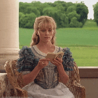

Everything in moderation, including moderation - Oscar Wilde
Welcome to the Oscar Wilde Fan Club.
Oscar Wilde wasn’t just a writer—he was a legend draped in velvet
and wit sharper than a well-cut cravat. Known for his dazzling plays
like The Importance of Being Earnest and his beautifully tragic novel
The Picture of Dorian Gray, Wilde mastered the art of blending humor
with biting social critique.
A true icon of individuality, he lived by
his own rules, turning everyday life into a stage for brilliance and
rebellion. Whether you love him for his genius one-liners
("Be yourself; everyone else is already taken") or
his unapologetic flair, one thing’s for sure -— Oscar Wilde was,
and still is, the King of Clever.
First Essays: Intentions
During the late 19th century, Wilde's collection of essays entitled "Intentions" wherein Wilde
discusses that life imitates Art far more than Art imitates life.
"Life imitates Art far more than Art imitates Life.
It is Art that makes us aware of our own petty emotions, and teaches us
how to see things. The great achievements of the imagination always precede
and determine the achievements of the reality.
The final revelation is that Lying, the telling of beautiful untrue things,
is the proper aim of Art."
Oscar Wilde Biographies - Wilde About Oscar Reviews

"Oscar Wilde: A Biography" by Richard Ellmann
"Oscar Wilde: The Unrepentant Years" by Nicholas Frankel
"The Secret Life of Oscar Wilde" by Neil McKenna
Early Life and Education
Born on October 16, 1854, in Dublin, Ireland.
His full name was Oscar Fingal O’Flahertie Wills Wilde.
His father, Sir William Wilde, was a famous surgeon. His mother, Jane Wilde, was a poet ("Speranza") and an Irish Nationalist.
Wilde attended Trinity College, Dublin, where he won the Berkley Gold Medal for his work in Greek studies.
He later attended Magdalen College, Oxford University and studied the Classics and Literature.
After University, he moved to London and gained a reputation for his wit and flamboyance.
Wilde's List of Plays, in order of publication
Vera
The Duchess of Padua
Lady Windemere's fan
A Woman of No Importance
An Ideal Husband
The Importance of Being Earnest
Salomé (op.posth)
La Sainte Courtisane (op.posth)
A Florentine Tragedy (op.posth)
Watch the trailer for the play here:
Attached below is a text of the play that can be found online, free (since copyright has expired)
Watch the Bunburyist Scene
Alternatively, listen to the Bunburyist audio & read along!